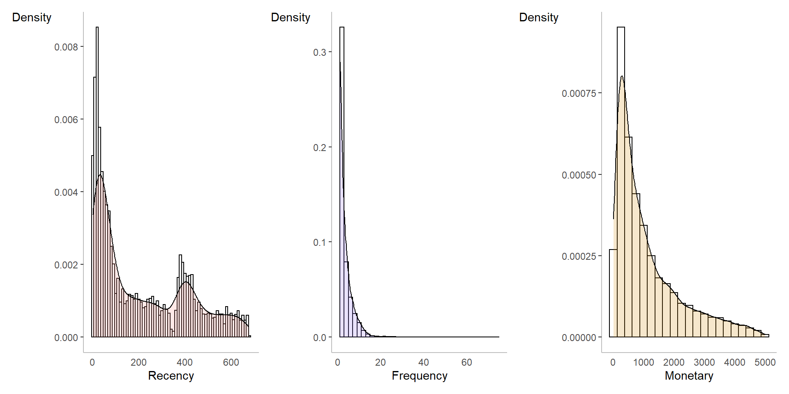
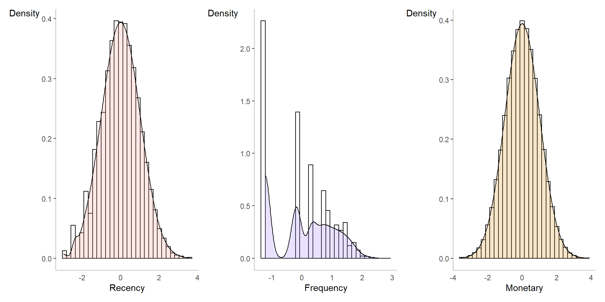
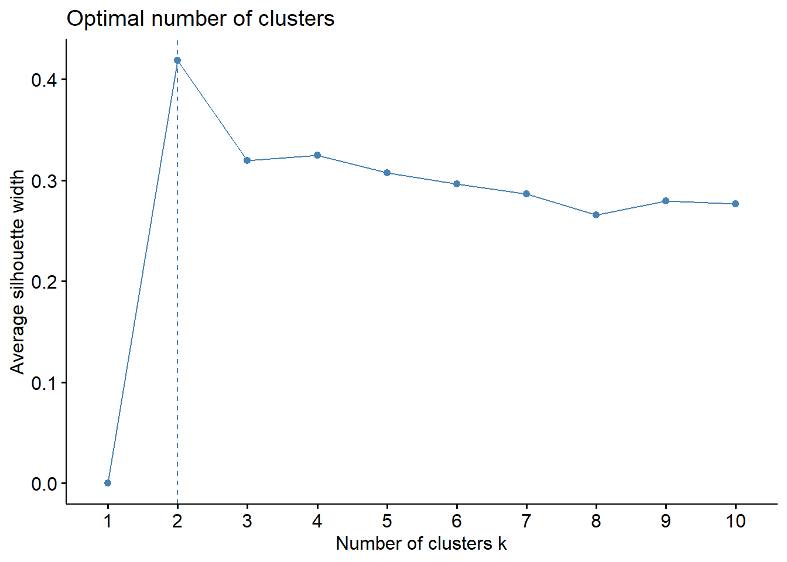
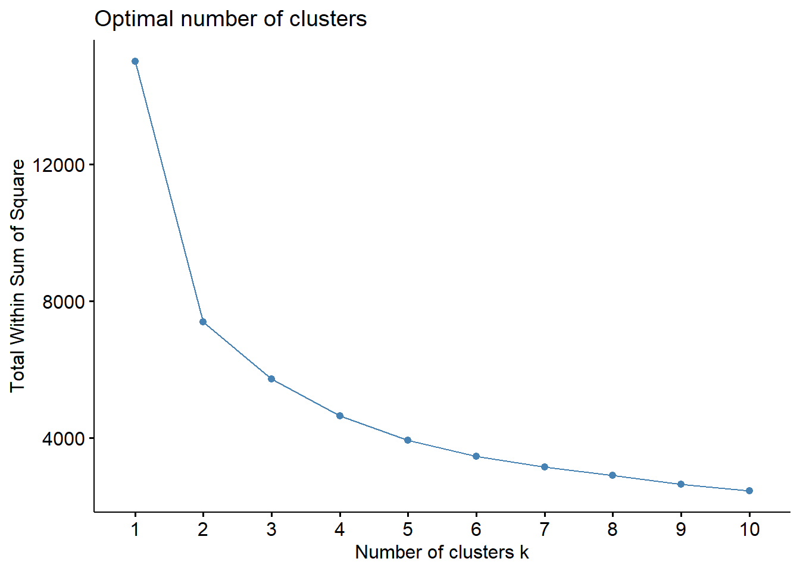
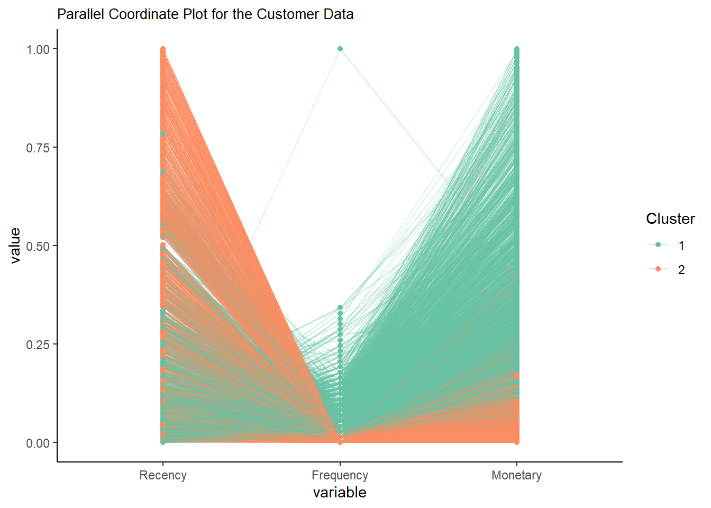

knitr::include_graphics("RFM.png")
Leveraging on simple data wrangling techniques to create a RFM model. Subsequently, leveraging on unsupervised classification to conduct customer segmentation for targeted marketing.
The RFM model has become essential for businesses to identify high value customers and possible churn customers to conduct targeted marketing. Businesses have leverage RFM model to better understand customer behaviours and also calculate Customer Life Time Value (LTV). This could also translate to better budgeting for marketing cost using the (3:1) ratio of LTV:CAC. In this article, I will demonstrate how we can leverage on existing libraries to conduct unsupervised classification and lastly potential future works to enhance the model.
knitr::include_graphics("RFM.png")
For this analysis, we will use the following packages from CRAN.
cluster - Methods for Cluster analysis. Much extended the original from Peter Rousseeuw, Anja Struyf and Mia Hubert, based on Kaufman and Rousseeuw (1990) “Finding Groups in Data”.tidyverse - Loading the core tidyverse packages which will be used for data wrangling and visualisation.factoextra - Extract and Visualize the Results of Multivariate Data Analyses. GGally Extension of ggplot2 by adding several functions to reduce the complexity of combining geometric objects with transformed data.
pacman::p_load(cluster, tidyverse, factoextra,lubridate,patchwork, GGally, moments,bestNormalize) #refer to 1st post to understand the usage of pacmancustomer <- readRDS("data/customer.rds")Let’s examine the data!
From the summary, we can identify a few potential problems!
summary (customer) Customer_ID CategoryGroup Category InvoiceDate
Min. :12348 Length:395888 Length:395888 Length:395888
1st Qu.:14132 Class :character Class :character Class :character
Median :15535 Mode :character Mode :character Mode :character
Mean :15462
3rd Qu.:16841
Max. :18287
Quantity TotalPrice
Min. : 1.00 Length:395888
1st Qu.: 2.00 Class :character
Median : 4.00 Mode :character
Mean : 8.29
3rd Qu.: 12.00
Max. :1500.00 head(customer$TotalPrice)[1] "£8" "£2" "£1" "£3" "£3" "£5"For the date time format, we will leverage on lubridate functions to convert our exisiting date to date time format. Since the format is Month/Day/Year, we will use the function mdy. For TotalPrice, there are two symbols found, £ and ,. We will use the gsub function and replace all symbols to an empty space. Lastly, using as.numeric to convert it to a numeric class. For CustomerID, simply use as.character to convert it to character class.
customer$InvoiceDate <- mdy(customer$InvoiceDate)
customer$TotalPrice <- as.numeric(gsub("[£]|[,]","",customer$TotalPrice, perl=TRUE))
customer$Customer_ID <- as.character(customer$Customer_ID)To extract how recent the customer purchase an item from the store, we will use the last InvoiceDate to substract all the dates a customer purchase from the store and retrieve the minimum number. Since the format of Recency will be in datetime format, we will convert it using the as.numeric function.
customer_recency <- customer %>%
mutate(recency = (max(InvoiceDate) + 1) - InvoiceDate) %>%
group_by(Customer_ID) %>%
summarise (Recency = as.numeric(min(recency)))To extract how frequent the customer purchase an item from the store, we will use the n() function to find out how many different dates the customer visited the store.
customer_frequency <- customer %>%
group_by(Customer_ID,InvoiceDate) %>%
summarise (count = n()) %>%
ungroup() %>%
group_by (Customer_ID) %>%
summarise (Frequency = n()) %>%
ungroup()customer_monetary <- customer %>%
group_by(Customer_ID) %>%
summarise (Monetary = sum(TotalPrice))customer_RFM <- customer_recency %>%
left_join (customer_frequency, by = "Customer_ID") %>%
left_join (customer_monetary, by = "Customer_ID")# Histogram overlaid with kernel density curve
rdplot <- ggplot(customer_RFM, aes(x=Recency)) +
geom_histogram(aes(y=..density..), # Histogram with density instead of count on y-axis
binwidth=10,
colour="black", fill="white") +
geom_density(alpha=.2, fill="#ff9285") +
ylab("Density") +
theme_classic() +
theme(axis.title.y= element_text(angle=0), axis.ticks.x= element_blank(),
axis.line= element_line(color= 'grey'))
fdplot <- ggplot(customer_RFM, aes(x=Frequency)) +
geom_histogram(aes(y=..density..), # Histogram with density instead of count on y-axis
binwidth=2,
colour="black", fill="white") +
geom_density(alpha=.2, fill="#906efa") +
ylab("Density") +
theme_classic() +
theme(axis.title.y= element_text(angle=0), axis.ticks.x= element_blank(),
axis.line= element_line(color= 'grey'))
mdplot <- ggplot(customer_RFM, aes(x=Monetary)) +
geom_histogram(aes(y=..density..), # Histogram with density instead of count on y-axis
binwidth=250,
colour="black", fill="white") +
geom_density(alpha=.2, fill="#d18500") +
ylab("Density") +
theme_classic() +
theme(axis.title.y= element_text(angle=0), axis.ticks.x= element_blank(),
axis.line= element_line(color= 'grey'))
rdplot + fdplot + mdplot
Through the skewness and the histogrm, we can conclude that the attributes does not conform to normal distribution. Since all three attributes does not conform to a normal distribution and K-means would perform better with a normal distributed data, we will conduct data transformation. Utilizing the bestNormalise library, we can identify which normalization techniques best suits each attributes based on their distribution.
skewness(customer_RFM$Recency)[1] 0.7240294skewness(customer_RFM$Frequency)[1] 3.781094skewness(customer_RFM$Monetary)[1] 1.435198We can
bestNormalize(customer_RFM$Recency)Best Normalizing transformation with 5010 Observations
Estimated Normality Statistics (Pearson P / df, lower => more normal):
- arcsinh(x): 11.2632
- Box-Cox: 8.2449
- Center+scale: 28.9884
- Exp(x): 22.7727
- Log_b(x+a): 11.2478
- orderNorm (ORQ): 1.2118
- sqrt(x + a): 10.1503
- Yeo-Johnson: 8.4653
Estimation method: Out-of-sample via CV with 10 folds and 5 repeats
Based off these, bestNormalize chose:
orderNorm Transformation with 5010 nonmissing obs and ties
- 552 unique values
- Original quantiles:
0% 25% 50% 75% 100%
1 32 121 382 676 bestNormalize(customer_RFM$Frequency)Best Normalizing transformation with 5010 Observations
Estimated Normality Statistics (Pearson P / df, lower => more normal):
- arcsinh(x): 82.5693
- Box-Cox: 83.245
- Center+scale: 82.2217
- Exp(x): 74.932
- Log_b(x+a): 82.5422
- orderNorm (ORQ): 82.2353
- sqrt(x + a): 82.6168
- Yeo-Johnson: 83.4307
Estimation method: Out-of-sample via CV with 10 folds and 5 repeats
Based off these, bestNormalize chose:
Standardized exp(x) Transformation with 5010 nonmissing obs.:
Relevant statistics:
- mean (before standardization) = 2.741283e+28
- sd (before standardization) = 1.940317e+30 bestNormalize(customer_RFM$Monetary)Best Normalizing transformation with 5010 Observations
Estimated Normality Statistics (Pearson P / df, lower => more normal):
- arcsinh(x): 2.4477
- Box-Cox: 1.8361
- Center+scale: 20.5277
- Log_b(x+a): 2.4527
- orderNorm (ORQ): 1.1718
- sqrt(x + a): 5.5001
- Yeo-Johnson: 1.8335
Estimation method: Out-of-sample via CV with 10 folds and 5 repeats
Based off these, bestNormalize chose:
orderNorm Transformation with 5010 nonmissing obs and ties
- 2312 unique values
- Original quantiles:
0% 25% 50% 75% 100%
4.00 313.25 713.50 1555.00 5004.00 customer_RFM_dt <- customer_RFM %>%
select(Recency, Frequency, Monetary)
Recency <- orderNorm(customer_RFM_dt$Recency)
Frequency <- boxcox (customer_RFM_dt$Frequency)
Monetary <- orderNorm(customer_RFM_dt$Monetary)
customer_RFM_dt$Recency <- Recency$x.t
customer_RFM_dt$Frequency <- Frequency$x.t
customer_RFM_dt$Monetary <- Monetary$x.t
skewness(customer_RFM_dt$Recency)[1] 0.01507482skewness(customer_RFM_dt$Frequency)[1] 0.08897177skewness(customer_RFM_dt$Monetary)[1] 0.0006851529# Histogram overlaid with kernel density curve
rdplot_dt <- ggplot(customer_RFM_dt, aes(x=Recency)) +
geom_histogram(aes(y=..density..), # Histogram with density instead of count on y-axis
colour="black", fill="white") +
geom_density(alpha=.2, fill="#ff9285") +
ylab("Density") +
theme_classic() +
theme(axis.title.y= element_text(angle=0), axis.ticks.x= element_blank(),
axis.line= element_line(color= 'grey'))
fdplot_dt <- ggplot(customer_RFM_dt, aes(x=Frequency)) +
geom_histogram(aes(y=..density..), # Histogram with density instead of count on y-axis
colour="black", fill="white") +
geom_density(alpha=.2, fill="#906efa") +
ylab("Density") +
theme_classic() +
theme(axis.title.y= element_text(angle=0), axis.ticks.x= element_blank(),
axis.line= element_line(color= 'grey'))
mdplot_dt <- ggplot(customer_RFM_dt, aes(x=Monetary)) +
geom_histogram(aes(y=..density..), # Histogram with density instead of count on y-axis
colour="black", fill="white") +
geom_density(alpha=.2, fill="#d18500") +
ylab("Density") +
theme_classic() +
theme(axis.title.y= element_text(angle=0), axis.ticks.x= element_blank(),
axis.line= element_line(color= 'grey'))
rdplot_dt + fdplot_dt + mdplot_dt
customer_RFM_cluster <- customer_RFM_dt %>%
select(Recency, Frequency, Monetary)To identify the optimal number of clusters using K means clustering, we will use the fviz_nbclust function and the silhouette and wss. Based on the silhouette score, the optimal cluster is 2 while the WSS score shows either 2 or 3. We will now explore both cluster size.
set.seed(1234)
fviz_nbclust(customer_RFM_cluster, kmeans, method = "silhouette")
fviz_nbclust(customer_RFM_cluster, kmeans, method = "wss")
km_cluster2 <- kmeans(customer_RFM_cluster,
2,
nstart = 25)
km_cluster3 <- kmeans(customer_RFM_cluster,
3,
nstart = 25)
customer_RFM$km_cluster2 <- as.character(km_cluster2$cluster)
customer_RFM$km_cluster3 <- as.character(km_cluster3$cluster)From the table, we can identify that cluster 1 consist of customers on average made a purchase within 94 days, frequent the store 5 times and spend 1.7k. Whereas for cluster 2, the customers recency period on average is about 325 days, frequent on average 1 time and spend about $392. We can say that cluster 1 consist of our high value customers and cluster 2 consist of potential churn customers.
customer_RFM %>%
group_by(km_cluster2) %>%
summarise(mean_recency = mean(Recency),
mean_frequency = mean(Frequency),
mean_monetary = mean(Monetary),
members = n()) # A tibble: 2 × 5
km_cluster2 mean_recency mean_frequency mean_monetary members
<chr> <dbl> <dbl> <dbl> <int>
1 1 94.1 5.45 1774. 2595
2 2 326. 1.39 393. 2415customer_RFM %>%
group_by(km_cluster3) %>%
summarise(mean_recency = mean(Recency),
mean_frequency = mean(Frequency),
mean_monetary = mean(Monetary),
members = n()) # A tibble: 3 × 5
km_cluster3 mean_recency mean_frequency mean_monetary members
<chr> <dbl> <dbl> <dbl> <int>
1 1 364. 1.11 295. 1681
2 2 54.6 7.32 2431. 1391
3 3 177. 2.80 865. 1938To better visualise the distribution of our customers based on their cluster, we will leverage on the ggparcoord to visualise the distribution using a parallel coordinates plot.
# Plot
ggparcoord(customer_RFM,
columns = 2:4, groupColumn = 5,
showPoints = TRUE,
scale="uniminmax",
title = "Parallel Coordinate Plot for the Customer Data",
alphaLines = 0.3
) +
theme_classic()+
theme(
plot.title = element_text(size=10)
) + scale_color_brewer(palette = "Set2") +
guides(color=guide_legend(title="Cluster"))